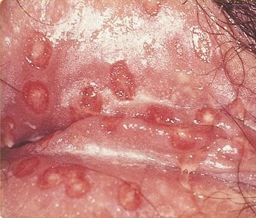

A herpes genital é uma infecção sexualmente transimissível (IST) causada pelo vírus Herpes Simplex (HSV) Caracteriza-se pelo surgimento de lesões, bolhas e úlceras dolorosas na região genital, anal ou nas coxas.O vírus penetra nas terminações nervosas e permanece latente (adormecido) no organismo por toda a vida. Crises podem ser desencadeadas por fatores como queda de imunidade, estresse ou exposição ao sol.
A transmissão ocorre pelo contato direto com a pele ou mucosas de uma pessoa infectada, geralmente ocorre durante as relações sexuais (porque é onde geralmente aparecem as feridas), porém a transmissão pode ocorrer em qualquer parte do corpo que tenha uma lesão contaminada
A prevenção da herpes genital baseia-se na prática de sexo seguro e adoção de medidas para evitar crises. use preservativos em todas as relações, evite ao máximo contato íntimo caso haja lesões ativas ou sintomas e fortaleça seu sistema imunológico.
O tratamento consiste no uso de antivirais como Aciclovir e Valaciclovir, que aceleram a cicatrização das feridas, porém infelizmente ainda não foi encontrada uma cura para essa infecção
